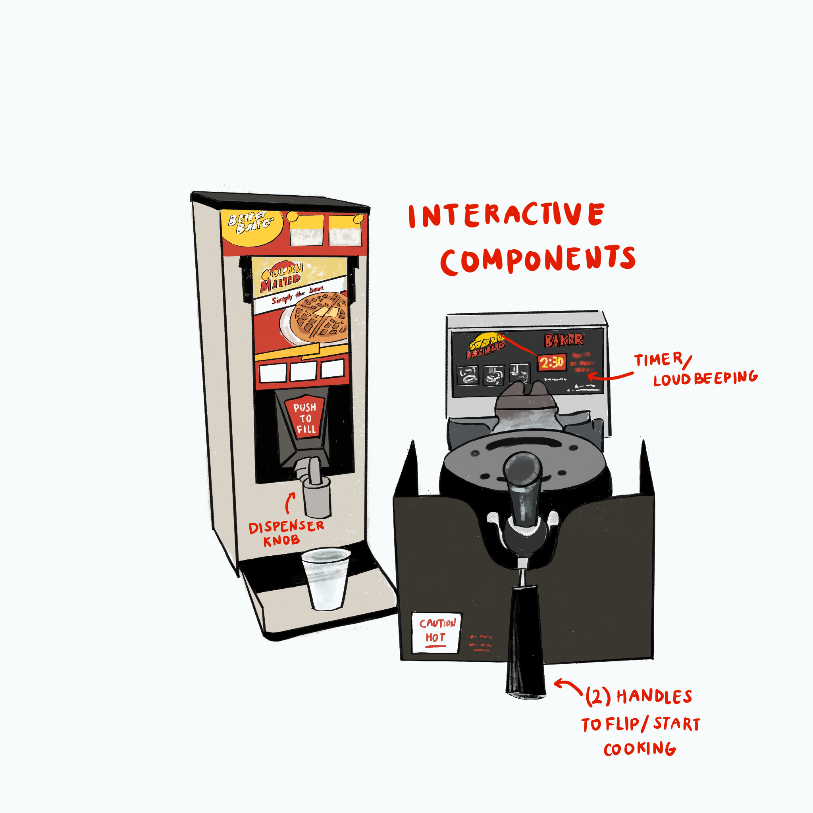
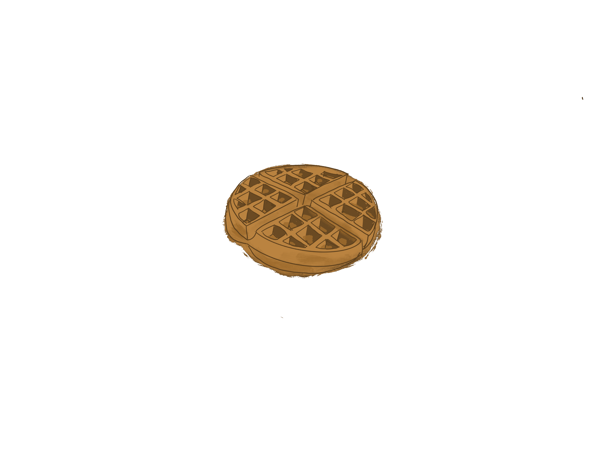
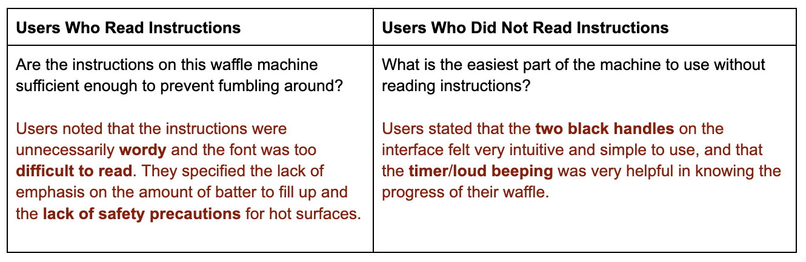

Located at the Verney-Wooley dining hall, this self-serve
machine allows users to make their own waffles at any time of the day.
With a push of a knob to dispense the batter and a turn of two handles
to start cooking the waffle, the timer goes off after 2.5 minutes!
...and voila, a warm waffle!

the interface: dispenser + cooker
user interactions

summary of observations
1. Two of the users did not read the instructions, and instead immediately grabbed the two large black handles while one user glanced at the instructions very briefly, having to squint their eyes and lower their stance.
2. In attempt to dispense the waffle batter, all users pressed the “push to fill” sticker. After being unable to press on anything, users found the actual gray knob to dispense the waffle mixture.
3. After pouring her waffle mixture into the interface, one user waited for the timer to start without rotating the cooker, until a user in line behind her told her to flip over the machine with the two handles.
4. Most users did not notice the black line on the cup of the dispenser, causing the batter to often overflow and trickle down the sides of the cooker.
5. After successfully starting the waffle cooker, none of the users paid attention to the built-in timer on the waffle cooker. Users either momentarily stepped away to get more food, talked to their friends, or scrolled on their phones.
interview questions
see what the users have said about the interface!
Users mentioned that this interface allows for the quick and easy access of eating freshly cooked waffles at any time of the day, whereas Ratty breakfast items tend to be cold and soggy. One user noted that after a long, stressful day with classes and exams, the interface brings nostalgia to the warmth of cooking hot waffles back at home.

Two users noted that the bright, strong colors from the images on the dispenser caught their attention, distracting them from the machine itself. All users noted the large waffle press handles at first glance, making the process of opening and closing the waffle press to be intuitive. One user specified that the red sticker "Push to Fill” was misleading since it is not the actual button to dispense the waffle batter.
Users stated that the colors had cohesiveness, but overall was not very enticing. Users suggested a glossy red color over black for the cooker surface, more versatile molds on the machine, larger and concise texts/fonts for the design/instructions, number stickers for use-order, and less generic graphics.
They stated that the simplicity, effectiveness, and efficiency of the interface is attractive, but the physical appearance is not appealing enough to purchase for a household. They mentioned the lack of versatility and portability, but can see it being convenient for mass-use dining halls, hotel kitchens, and self-serve events. Despite a couple flaws, for first time users, the interface is straightforward enough to successfully use with trial and error.